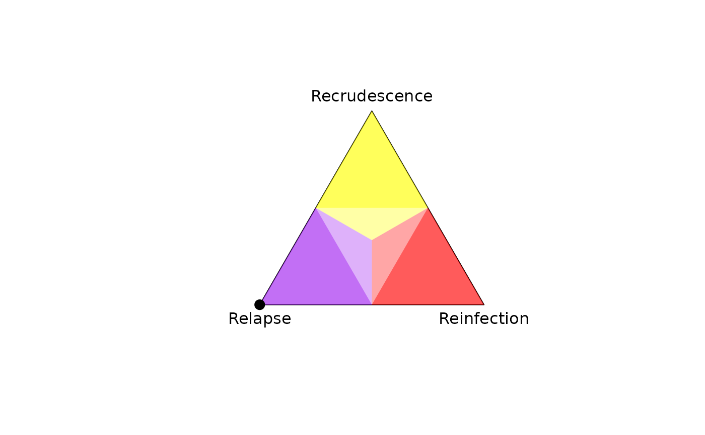

Plots a 2D simplex (a triangle with unit sides centered at the origin) onto
which per-recurrence posterior probabilities of recrudescence, relapse,
reinfection (or any other probability triplet summing to
one) can be projected; see project2D() and Examples below.
Arguments
- v.labels
Vertex labels anticlockwise from top (default: "Recrudescence", "Relapse", "Reinfection"). If NULL, vertices are not labelled.
- v.cutoff
Number between 0.5 and 1 that separates lower vs higher probability regions. Use with caution for recrudescence and reinfection classification; see "Understand posterior probabilities".
- v.colours
Vertex colours anticlockwise from top.
- plot.tri
Logical; draws the triangular boundary if
TRUE(default).- p.coords
Matrix of 3D simplex coordinates (e.g., per-recurrence probabilities of recrudescence, relapse and reinfection), one vector of 3D coordinates per row, each row is projected onto 2D coordinates using
project2D()and plotted as a single simplex point usinggraphics::points(). If the user provides a vector encoding a probability triplet summing to one, it is converted to a matrix with one row.- p.labels
Labels of points in
p.coords(default row names ofp.coords) No labels ifNA.- p.labels.pos
Position of
p.labels:1= below,2= left,3= above (default) and4= right. Can be a single value or a vector.- p.labels.cex
Size expansion of
p.labelspassed totext.- ...
Additional parameters passed to
graphics::points().
Examples
# Plot 2D simplex
plot_simplex(p.coords = diag(3),
p.labels = c("(1,0,0)", "(0,1,0)", "(0,0,1)"),
p.labels.pos = c(1,3,3))

# ==============================================================================
# Given data on an enrollment episode and a recurrence,
# compute the posterior probabilities of the 3Rs and plot the deviation of the
# posterior from the prior
# ==============================================================================
# Some data:
y <- list(list(m1 = c('a', 'b'), m2 = c('c', 'd')), # Enrollment episode
list(m1 = c('a'), m2 = c('c'))) # Recurrent episode
# Some allele frequencies:
fs <- list(m1 = setNames(c(0.4, 0.6), c('a', 'b')),
m2 = setNames(c(0.2, 0.8), c('c', 'd')))
# A vector of prior probabilities:
prior <- array(c(0.2, 0.3, 0.5), dim = c(1,3),
dimnames = list(NULL, c("C", "L", "I")))
# Compute posterior probabilities
post <- compute_posterior(y, fs, prior, progress.bar = FALSE)
#> Number of valid relationship graphs (RGs) is 9
#> Computing log p(Y|RG) for 9 RGs
#> Finding log-likelihood of each vector of recurrence states
#>
# Plot simplex with the prior and posterior
plot_simplex(p.coords = rbind(prior, post$marg),
p.labels = c("Prior", "Posterior"),
pch = 20)
# Add the deviation between the prior and posterior: requires obtaining 2D
# coordinates manually
xy_prior <- project2D(as.vector(prior))
xy_post <- project2D(as.vector(post$marg))
arrows(x0 = xy_prior["x"], x1 = xy_post["x"],
y0 = xy_prior["y"], y1 = xy_post["y"], length = 0.1)